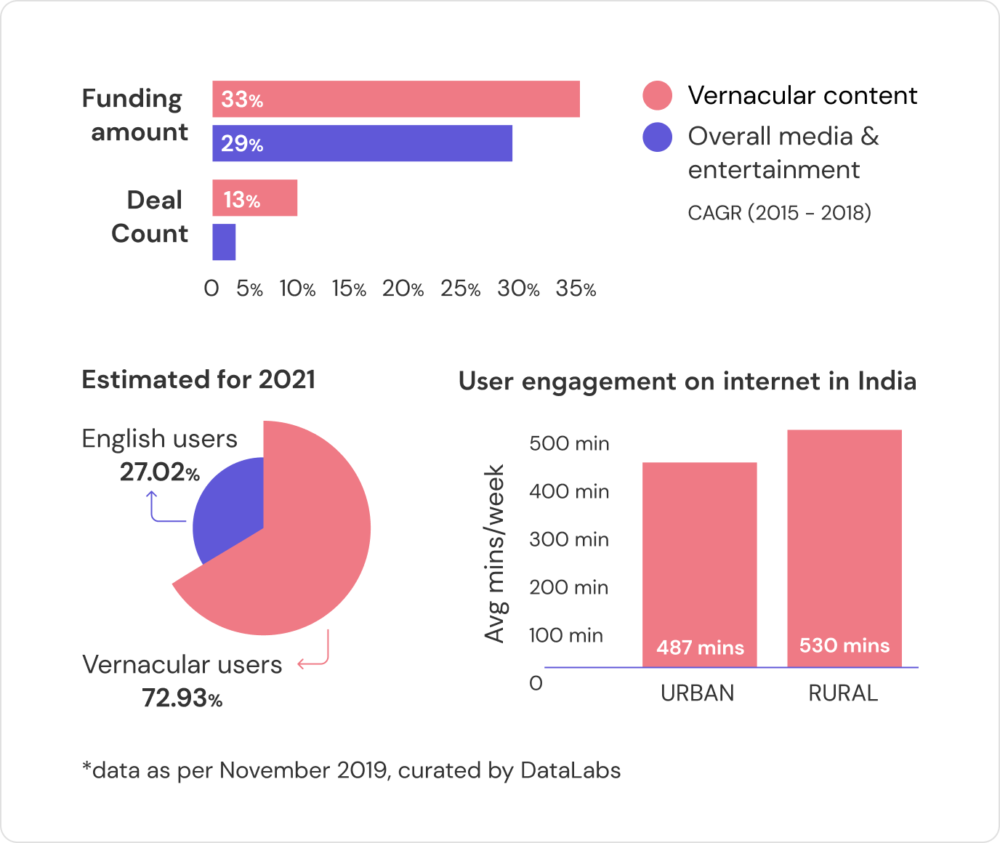
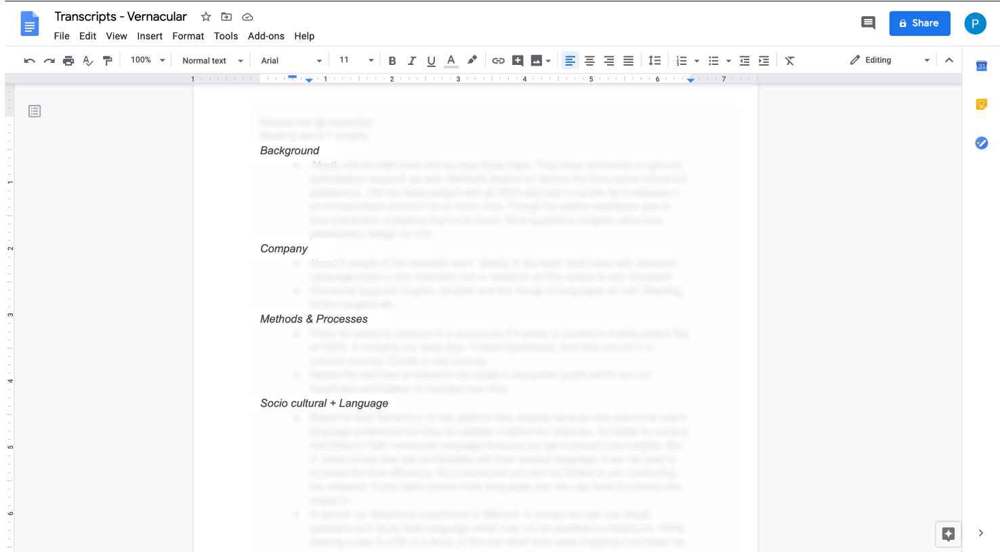
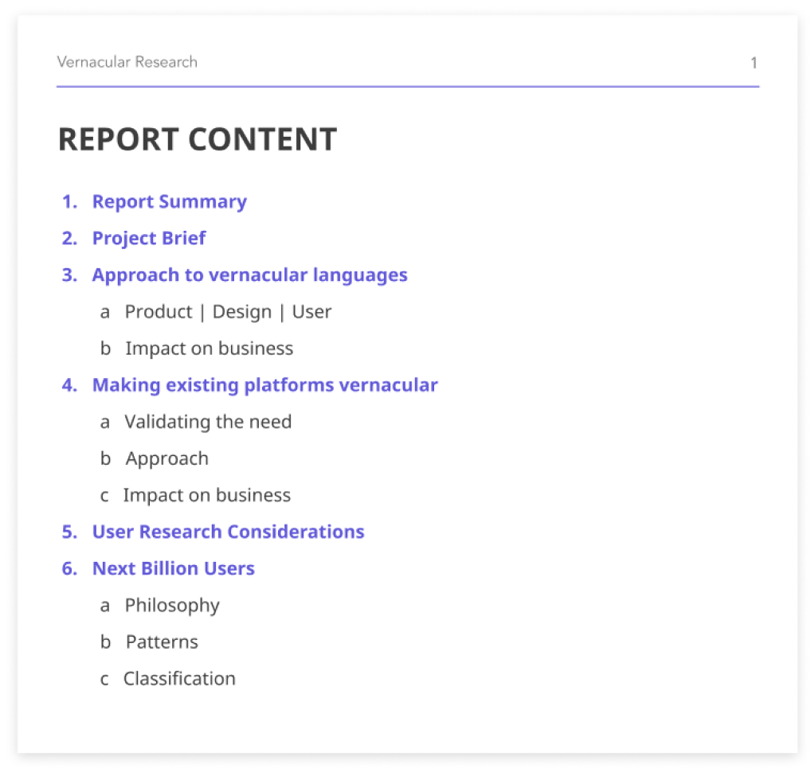

Meesho · Foundational research · 2020
The question
Meesho's users are largely women from semi-urban and rural India, running reselling businesses on an app designed and researched mostly in English. As a research intern, I led a study on how language and socio-cultural context shape both the product and the research itself: what translation flattens, what transliteration misses, and which biases creep in when teams build for "the next billion users" they rarely meet.
My role
User Research Internled this study end to end
Timeline
May – July 2020remote, mid-lockdown
Participants
10 practitioners5 researchers, 4 designers, 1 PM
Sessions
~70 minutes each3 role-specific questionnaires
Output
Research reportplus a workshop on practitioner bias
Background
By 2021, vernacular-language users were projected to make up nearly three quarters of India's internet, and rural users were already spending more minutes online per week than urban ones. Meesho sat right on top of this shift: a social commerce platform with 10M+ downloads whose resellers were largely women in semi-urban and rural India, more comfortable in Hindi and regional languages than in English.
The product, and most of the research behind it, still ran on English defaults. The open question was what that was costing: in comprehension, in trust, and in how much research findings could be believed when the sessions themselves were conducted across a language gap.

Method
It was mid-2020, remote, and I had ten weeks. Instead of thin firsthand sessions with end users, I went deep with the people who had spent years researching and designing for vernacular users across the industry: what worked, what failed, and what they wished someone had told them. Ten interviews, around 70 minutes each, against three questionnaires tailored to how each role meets the language problem.
5
On running sessions across languages: moderation, translation loss, building rapport, and how findings shift with the language of the interview itself.
4
On designing vernacular interfaces: script and layout, icon comprehension, and where translated UI text breaks the design.
1
On the business case: when vernacular investment pays off, and how teams decide which languages to support first.


The central finding
The experts kept converging on the same distinction. Translating an interface into textbook Hindi often makes it harder to use, because nobody shops in textbook Hindi. Transliterating English into Devanagari keeps familiar words but can read as noise. What users actually speak is a colloquial mix. Try the same product card three ways below.
The card is the same. Switch the language strategy and watch the buy button, then read what each version does to a first-time user.
Fine for English-comfortable users, and a wall for everyone else. Every unfamiliar word adds hesitation right where the purchase decision happens.
The card and copy are illustrative, written for this page. The translation-versus-colloquial pattern they demonstrate is the study's finding, echoed by nearly every expert interviewed.
What the study argued
I was an intern, and this was a ten-week foundational study, expert interviews and secondary research rather than fieldwork with end users. Its impact was in what it gave the teams: a vocabulary for the translation-versus-colloquial decision, research considerations for cross-language sessions, and a workshop that named biases out loud. It's also the project that set the direction of my career: the question of who research quietly excludes has followed me into every role since.
What I learned
This study taught me to treat the conditions of research, the language of the session, who feels entitled to speak, what the participant assumes the researcher wants to hear, as method decisions rather than logistics. A discussion guide that's flawless in English can be a different instrument entirely in Hindi, and pretending otherwise produces confident findings about the wrong thing.
It also taught me that expert interviews are a legitimate, fast way to stand on the field's accumulated experience, as long as the report is honest that this is what it did. Ten practitioners with years among vernacular users each taught me things no ten-week study of my own could have reached.